Discover Scuba Diving
Una mañana de teoría y habilidades en aguas poco profundas, y luego dos inmersiones reales en Coiba con tu instructor al lado.
- Duración
- 1 día
- Desde
- $170
PADI 5 Star Dive Resort · Santa Catalina, Panamá
Salidas diarias en lancha desde Santa Catalina y cursos PADI de principiante a profesional, en el destino de buceo más importante de Panamá.
Lo que puedes ver
Pelágicos grandes casi todo el año y tiburones de arrecife en casi cada inmersión.
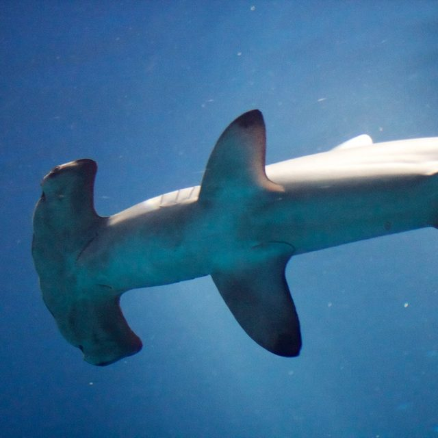
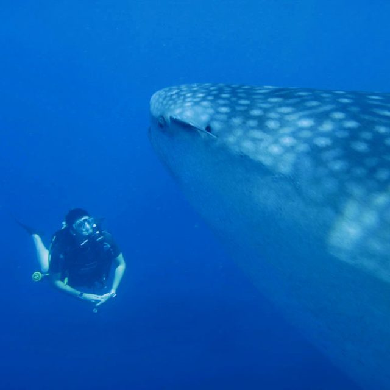
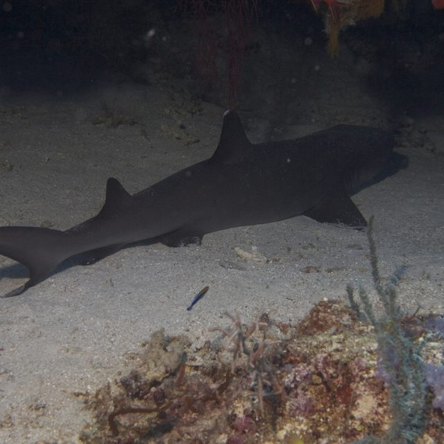
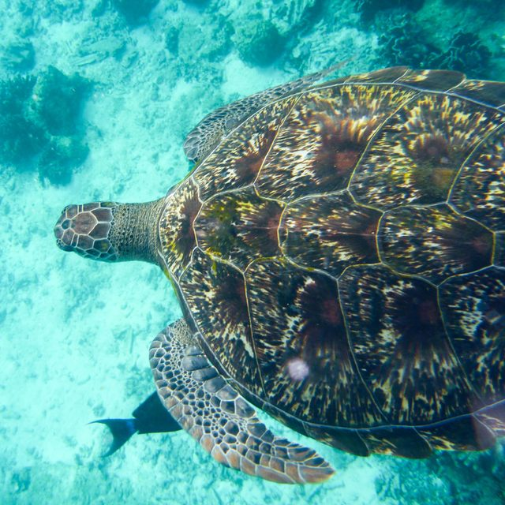
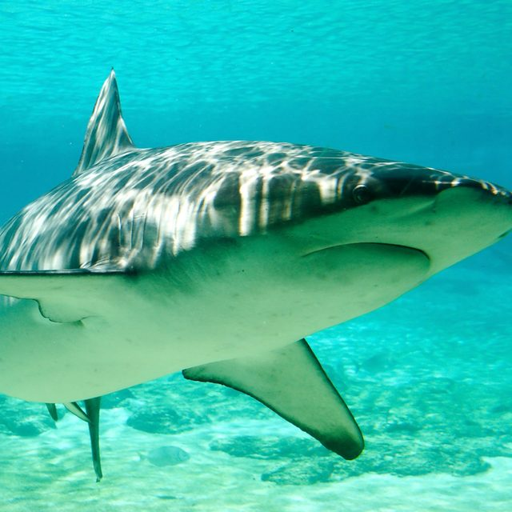
Por qué Coiba
Coiba fue colonia penal durante casi un siglo, y eso mantuvo intactos sus bosques y arrecifes mientras el resto de la costa del Pacífico se desarrollaba. Hoy es Patrimonio de la Humanidad de la UNESCO y la isla más grande de Centroamérica, protegida junto con 38 islas menores y las aguas que las rodean.
Las mismas corrientes que alimentan Galápagos pasan por aquí. Pináculos volcánicos suben desde aguas profundas y atraen a los pelágicos: tiburones ballena en la estación seca, jorobadas en la verde, martillos frente a Contreras y tiburones punta blanca en casi cada inmersión.
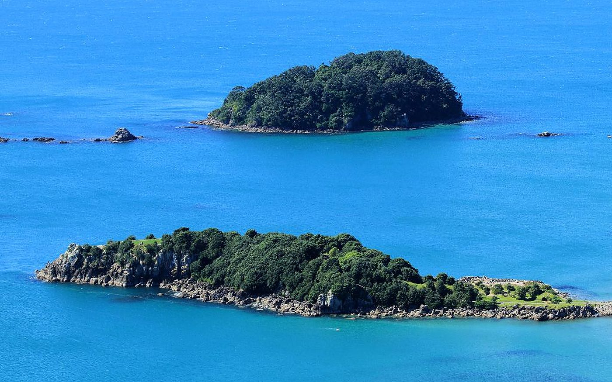
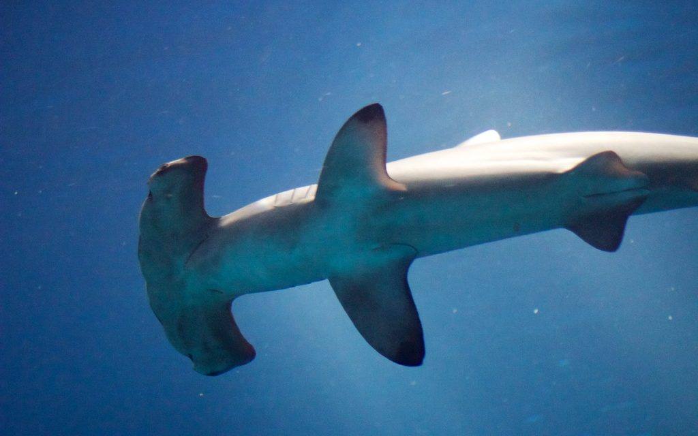
Salidas diarias
Para buzos certificados. Lancha, guía PADI, equipo completo y almuerzo incluidos. Grupos pequeños y sitios elegidos cada mañana según las condiciones.
Por persona. No incluye la entrada al parque: $20 para extranjeros, $5 para panameños y residentes, en efectivo al parque.
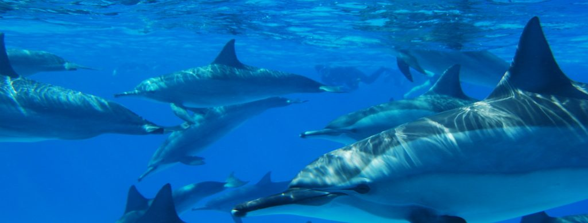
Un día típico
Papeleo, prueba de equipo, café. Bajamos juntos a la playa.
Alrededor de una hora cruzando el Golfo de Chiriquí.
Normalmente el sitio más profundo y expuesto del día, con energía y aire frescos.
Una playa de arena blanca dentro del parque, monos aulladores en los árboles.
Un arrecife o estación de limpieza. Tortugas, punta blanca, cardúmenes de jureles.
Se decide en la lancha. Casi todos dicen que sí.
Enjuagar el equipo, registrar las inmersiones, atardecer desde la punta.
Cursos PADI
Tus inmersiones de formación son dentro de Coiba, con tiburones en el arrecife, no en una piscina. Cada curso lo imparte un Instructor PADI en español o inglés, con un máximo de cuatro alumnos por instructor.
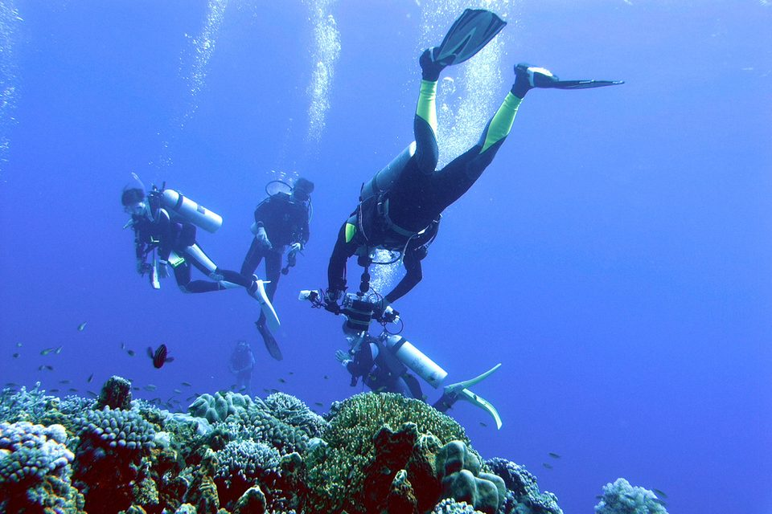
Una mañana de teoría y habilidades en aguas poco profundas, y luego dos inmersiones reales en Coiba con tu instructor al lado.
La certificación que te permite bucear en cualquier parte del mundo. Teoría en línea antes de llegar, luego habilidades en aguas confinadas y cuatro inmersiones en el parque.
¿Ya terminaste la teoría y la piscina en casa? Completa tus cuatro inmersiones en aguas abiertas aquí en dos días y certifícate en Coiba.
Cinco inmersiones de aventura, incluidas Profunda y Navegación. Los mejores sitios de Coiba están entre 20 y 30 metros con corriente.
Autorrescate, asistencia a otros buzos y Emergency First Response, en condiciones reales de mar abierto.
De cuatro a ocho semanas viviendo en Santa Catalina y buceando Coiba casi a diario. Sal como profesional PADI.
También disponibles: especialidades de Nitrox, Profundo, Deriva y Navegación, buceo Tec en Coiba e instrucción privada.
Sitios de buceo
Elegimos los sitios del día cada mañana según el estado del mar, la corriente y lo que se ha visto esa semana.
Avanzado
Un grupo de islas en el borde norte del parque. Inmersiones profundas de mar abierto en pináculos donde patrullan cardúmenes de martillos en la estación seca.
Toca un sitio en el mapa.
Mapa estilizado. Posiciones aproximadas, no apto para navegación.
Temporada
En Coiba se bucea todo el año. La estación seca trae afloramientos fríos y ricos en nutrientes, y a los grandes filtradores. La verde trae agua cálida, mar plano, jorobadas y la mejor visibilidad.
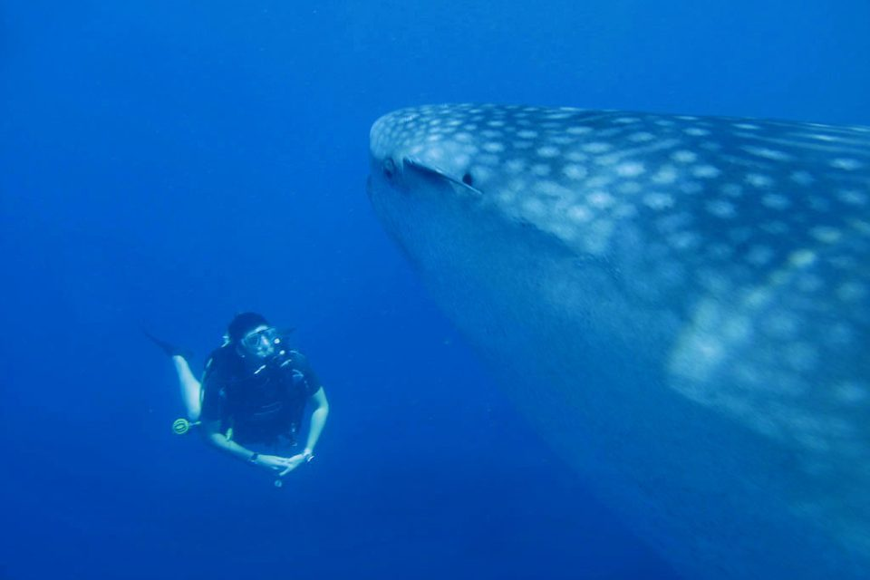
La naturaleza no lee calendarios. Estos son los meses con mejores probabilidades, según lo que nuestros guías han registrado durante años.
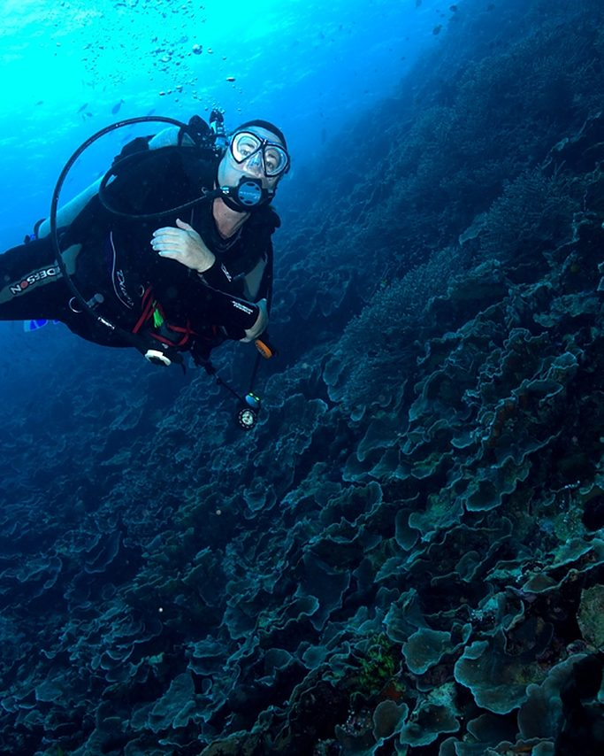
El centro
Estamos a cien metros de la playa de donde salen las lanchas. Nuestros instructores enseñan en español e inglés, nuestros capitanes crecieron en estas aguas y cada salida lleva oxígeno, botiquín, radio y una boya de señalización por buzo.
Vamos en grupos pequeños por elección: cuatro buzos por guía en la lancha, cuatro alumnos por instructor en los cursos. Coiba es un parque avanzado y preferimos que recuerdes los martillos y no la multitud.
Preguntas frecuentes
Para las salidas diarias, sí: Open Water o equivalente. Si nunca has buceado, reserva Discover Scuba Diving y harás dos inmersiones reales en el parque con un instructor a tu lado. Para los sitios más profundos de Contreras y Canales recomendamos Advanced Open Water.
El Parque Nacional Coiba cobra una entrada a cada visitante: $20 por día para extranjeros y $5 para panameños y residentes. La cobran los guardaparques en efectivo, así que no podemos incluirla en el pago en línea. Trae cambio exacto si puedes.
Desde Ciudad de Panamá, unas 5 a 6 horas en carro vía Santiago y Soná, o bus hasta Soná y desde ahí bus local o taxi. De Albrook salen buses a Santiago todo el día. Podemos organizar un traslado privado desde Ciudad de Panamá o David.
Tarjeta de certificación, traje de baño, toalla, bloqueador, gorra y efectivo para la entrada al parque. Nosotros ponemos todo el equipo de buceo, incluido el traje. En estación seca incluimos traje de 5 mm porque las termoclinas pueden bajar a 20 °C.
Sí. Snorkelers y acompañantes pueden unirse a la salida con tarifa reducida, hacer snorkel en los intervalos en Granito de Oro y pasar el día en la isla mientras el grupo bucea.
En estación seca, de diciembre a abril, las lanchas se llenan con una semana o más de antelación. El resto del año suelen bastar unos días. Los cursos necesitan una fecha de inicio acordada para programar un instructor.
Reserva
Elige una fecha, paga un depósito y nosotros nos encargamos del resto. ¿Preguntas primero? WhatsApp es la forma más rápida de hablar con la tienda.